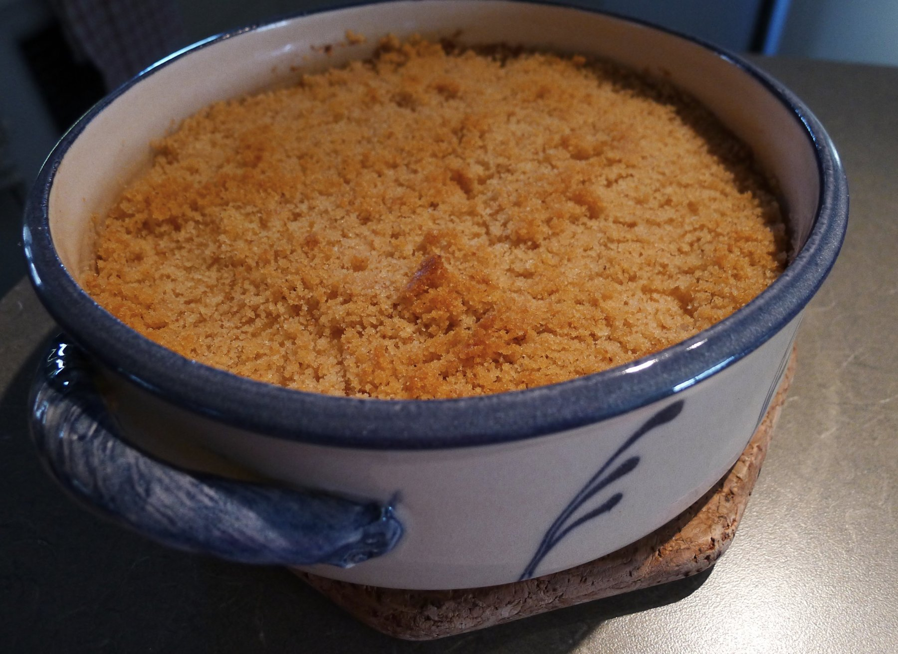

Finnish Turnip Casserole

Description
This Finnish turnip casserole is a creamy, lightly sweet dish made with mashed turnip and carrots, enriched with butter, milk, and eggs. Subtly spiced with cinnamon, it’s a comforting and traditional side perfect for festive meals.
Ingredients
- 3 large carrots, cubed
- 1 large turnip, cubed
- ¼ cup all-purpose flour
- ¼ cup white sugar
- 3 tablespoons unsalted butter, softened
- ½ teaspoon salt
- ½ cup milk
- 2 eggs
- 2 tablespoons white sugar
- ¼ teaspoon ground cinnamon
Directions
- Preheat the oven to 350 degrees F (175 degrees C). Grease a 2-quart casserole dish.
- Place carrot and turnip cubes into a large pot and cover with salted water; bring to a boil over high heat. Reduce heat to medium-low, cover, and simmer until tender, about 20 minutes. Drain; steam dry 1 to 2 minutes.
- Return carrot and turnip cubes to the pot. Add flour, 1/4 cup sugar, butter, and salt; mash well.
- Whisk milk and eggs together in a bowl; stir into mashed carrot-turnip mixture until combined. Transfer to the prepared dish. Combine remaining 2 tablespoons sugar and cinnamon in a small bowl; sprinkle over mashed mixture.
- Bake in the preheated oven until casserole is slightly firmed and top has begun to turn golden brown, about 45 minutes.
- Enjoy!
Home